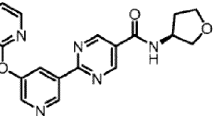

Patent Examination Benchmark Report
EP20726962.2 · COMBINATIONS COMPRISING BENZODIOXOL AS GLP-1R AGONISTS FOR USE IN THE TREATMENT OF NASH/NAFLD AND RELATED DISEASES
来源 JSON：EP20726962-analysis.json
Application Preview
Claim Draft Preview
tetrahydrospiro[indazole-5,4'-piperidine]-1'-carbonyl)-6-methoxypyridin-2-yl)benzoicacidora
pharmaceuticallyacceptablesalt thereof,foruseinamethodfortreatingadiseaseorcondition
inapatient inneed thereof,wherein:
thediseaseorconditionisselectedfromnonalcoholicsteatohepatitiswithliverfibrosis,
nonalcoholic steatohepatitis with cirrhosis,and nonalcoholic steatohepatitis with cirrhosis and
theGLP-1Ragonistisselected from:
oxetan-2-ylmethyl]-1H-benzimidazole-6-carboxylic acid;
[(2S)-oxetan-2-ylmethyl]-1H-benzimidazole-6-carboxylicacid;
[(2S)-oxetan-2-ylmethyl]-1H-benzimidazole-6-carboxylicacid;
fluoro-1-[(2S)-oxetan-2-ylmethyl]-1H-benzimidazole-6-carboxylic acid;
2-({4-[2-(4-chloro-2-fluorophenyl)-2-methyl-1,3-benzodioxol-4-yl]piperidin-1-yl}methyl)-1-
[(2S)-oxetan-2-ylmethyl]-1H-benzimidazole-6-carboxylicacid;
2-({4-[2-(4-cyano-2-fluorophenyl)-2-methyl-1,3-benzodioxol-4-yl]piperidin-1-yl}methyl)-1-
[(2S)-oxetan-2-ylmethyl]-1H-benzimidazole-6-carboxylic acid;
[(2S)-oxetan-2-ylmethyl]-1H-benzimidazole-6-carboxylicacid;
2-({4-[2-(4-chloro-2-fluorophenyl)-2-methyl-1,3-benzodioxol-4-yl]piperidin-1-ylmethyl)-3-
(1,3-oxazol-2-ylmethyl)-3H-imidazo[4,5-b]pyridine-5-carboxylic acid;
[(1-ethyl-1H-imidazol-5-yl)methyl]-1H-benzimidazole-6-carboxylic acid;
(1,3-oxazol-4-ylmethyl)-1H-benzimidazole-6-carboxylicacid;
(pyridin-3-ylmethyl)-1H-benzimidazole-6-carboxylicacid;
(1,3-oxazol-5-ylmethyl)-1H-benzimidazole-6-carboxylic acid;
2-({4-[2-(4-chloro-2-fluorophenyl)-2-methyl-1,3-benzodioxol-4-yl]piperidin-1-yl}methyl)-1-
[(1-ethyl-1H-1,2,3-triazol-5-yl)methyl]-1H-benzimidazole-6-carboxylicacid;
2-({4-[2-(4-chloro-2-fluorophenyl)-2-methyl-1,3-benzodioxol-4-yl]piperidin-1-yl}methyl)-1-
(1,3-oxazol-2-ylmethyl)-1H-benzimidazole-6-carboxylicacid;
2-({4-[2-(4-chloro-2-fluorophenyl)-7-fluoro-2-methyl-1,3-benzodioxol-4-yl]piperidin-1-
ylmethyl)-1-[(2S)-oxetan-2-ylmethyl]-1H-benzimidazole-6-carboxylic acid;
(1,3-oxazol-2-ylmethyl)-1H-benzimidazole-6-carboxylic acid;
yl}methyl)-7-fluoro-1-[(2S)-oxetan-2-ylmethyl]-1H-benzimidazole-6-carboxylic acid;
yl}methyl)-1-[(2S)-oxetan-2-ylmethyl]-1H-benzimidazole-6-carboxylic acid;
ylmethyl)-7-fluoro-1-[(2S)-oxetan-2-ylmethyl]-1H-benzimidazole-6-carboxylic acid;
2-({4-[(2S)-2-(4-cyano-2-fluorophenyl)-2-methyl-1,3-benzodioxol-4-yl]piperidin-1-
yl}methyl)-1-[(2S)-oxetan-2-ylmethyl]-1H-benzimidazole-6-carboxylic acid;
2-({4-[(2S)-2-(5-chloropyridin-2-yl)-2-methyl-1,3-benzodioxol-4-yl]piperidin-1-yl}methyl)-
1-[(2S)-oxetan-2-ylmethyl]-1H-benzimidazole-6-carboxylic acid;
yl}methyl)-1-[(1-ethyl-1H-imidazol-5-yl)methyl]-1H-benzimidazole-6-carboxylic acid;
2-({4-[(2R)-2-(4-cyano-2-fluorophenyl)-2-methyl-1,3-benzodioxol-4-yl]piperidin-1-
yl}methyl)-1-[(2S)-oxetan-2-ylmethyl]-1H-benzimidazole-6-carboxylic acid;
1-[(2S)-oxetan-2-ylmethyl]-1H-benzimidazole-6-carboxylicacid;
yl}methyl)-1-[(1-ethyl-1H-imidazol-5-yl)methyl]-1H-benzimidazole-6-carboxylicacid;
[(2S)-oxetan-2-ylmethyl]-1H-benzimidazole-6-carboxylic acid;
1-[(2S)-oxetan-2-ylmethyl]-1H-benzimidazole-6-carboxylic acid;
2-({4-[(2R)-2-(5-chloropyridin-2-yl)-2-methyl-1,3-benzodioxol-4-yl]piperidin-1-yl}methyl)-
1-[(2S)-oxetan-2-ylmethyl]-1H-benzimidazole-6-carboxylic acid;and
[(2S)-oxetan-2-ylmethyl]-1H-benzimidazole-6-carboxylic acid,DIAST-X2;
orphamaceuticallyacceptablesaltthereof.
Draft claim 1 from claims review JSON; pages 1, 2, 3
Draft OCR claim only; verify against the authority PDF before using as legal text.
Review status: 0/23 verified · Authority PDF Claims review HTML Claims draft JSON
Markush / Formula

Links
- EPO Register Main
- EPO Register Documents
- Espacenet Search
- Local main HTMLEP20726962-main.html
- Local doclist CSVEP20726962-doclist.csv
Original Application Files
案件元数据
| 法域 | EP |
|---|---|
| 申请号 | EP20726962.2 |
| 发明名称 | COMBINATIONS COMPRISING BENZODIOXOL AS GLP-1R AGONISTS FOR USE IN THE TREATMENT OF NASH/NAFLD AND RELATED DISEASES |
| 申请人 | Pfizer Inc. |
| 申请日 | 2020-05-15 |
| 审查意见日期 | 2025-06-20 |
| 授权结果 | granted |
审查维度评分
| 维度/分数 | 字段描述 | 分析 | 原文 | 翻译 | LLM证据说明 |
|---|---|---|---|---|---|
新颖性 80 | 是否被单一现有技术直接公开，未被质疑通常为高分。 | 审查记录中，审查员在 2024-07 明确指出单一文献 D1 公开了本案所述 GLP-1R agonists 及其组合，并直接写明“Thus anticipating the subject-matter of the present claims.” 申请人随后在 2024-10 对权利要求作出回应，删除了被点名的 fatty liver 选项；到 2025-02 出现拟授权，2025-06 正式授权，说明该新颖性异议已在最终文本中被克服。当前风险因此较低，但由于来源中确实存在明确的 anticipation 表述，若后续重新放宽疾病限定，仍会回到新颖性风险。 | Therewith,thepresentpriorityisnotinvalidated. thepresentcombinationsforuse in thetreatmentofNASH.Saiddiseasesfall within the broader term"fatty liver".Thus anticipating the subject-matter of the present claims. | 因此，当前优先权并未被破坏。上述用于治疗 NASH 的现有组合，这些疾病落入更宽泛的“fatty liver”术语之内。因此，现有技术已经预见了本申请权利要求的主题。 | 该段原文是审查员对单一现有技术的明确结论，直接使用了“anticipating”并说明相关疾病落入更宽术语，从而支持新颖性曾被否定但后续被修改克服。 |
创造性 100 | 按 EPO problem-solution/COMVIK 判断区别特征是否贡献技术效果。 | 源材料显示该案已进入Rule 71(3)拟授权并最终获得授权，说明审查员未坚持Art.56创造性异议。现有记录中未见对最接近现有技术、区别特征和客观技术问题的否定性problem-solution分析，也未见COMVIK下非技术特征导致的创造性缺陷。申请人后续修订主要是删除“fatty liver”选项以回应其他审查意见，但最终文本仍被批准，因此当前创造性风险基本不存在。 | DecisiontograntaEuropeanpatentpursuanttoArticle97(1)EPC FollowingexaminationofEuropeanpatent applicationNo.20726962.2aEuropeanpatentwiththetitle 2004C)orintheinformation(EPOForm2004W,cf.Noticefrom theEPOdated8June2015,OJEPO 2015,A52)dated 28.02.25ishereby granted inrespect of the designated Contracting States. | 根据《欧洲专利公约》第一百零七条第一款作出授予欧洲专利的决定。在审查欧洲专利申请第20726962.2号后，现授予一项欧洲专利，适用于指定缔约国。 | This grant decision is strong evidence that the examining division ultimately accepted the claims under EPC requirements, including Art.56 inventive step. It supports a top score because no surviving inventive-step objection appears in the record. |
充分公开/支持 80 | 说明书是否足以实施，权利要求是否有原始公开和技术支撑。 | 审查材料中没有看到审查员对充分公开、说明书支持或原始公开作出明确否定；相反，审查员在附件意见中明确写明D1公开了所述GLP-1R激动剂及其与各抑制剂的组合，并且这些组合是在NASH语境下公开，认为现有优先权不被破坏。申请人随后又将部分权利要求中的“fatty liver”选项删除，显示其在原始公开/Article 123(2)边界上作了收窄性修改。最终案件进入Rule 71(3)并获得授权，说明当前文本已被接受。整体来看，充分公开/支持风险已基本化解，但若后续再恢复更宽的疾病表述或引入新的说明书措辞，仍可能产生新增内容或支持争议。 | theircombinationwiththeclaimedACCinhibitor,DGAT2inhibitor,KHKinhibitor
andFXR agonist(seelines 3-37 of page 36).The disclosure of these
combinationsismadeinthecontextofNASH.
claimeddiseasesfattyliver，nonalcoholicsteatohepatitiswithliverfibrosis,
nonalcoholicsteatohepotitiswithcirrhosis,andnonalcoholicsteatohepatitiswith
cirrhosisandwithhepatocellularcarcinomaorwithametabolic-relateddisease.
Therewith,thepresentpriorityisnotinvalidated. | 文件D1（WO2019239319，链接至EP4219487）由同一申请人提交，并主张在20.05.2019（当前优先权日）之前的两个优先权；其公开了当前所主张的GLP-1R激动剂：见D1的实施例1-102以及它们与所主张的ACC抑制剂、DGAT2抑制剂、KHK抑制剂和FXR激动剂的组合（见第36页第3-37行）。这些组合的公开是在NASH的语境中进行的。所主张的疾病包括脂肪肝、伴肝纤维化的非酒精性脂肪性肝炎、伴肝硬化的非酒精性脂肪性肝炎，以及伴肝细胞癌或代谢相关疾病的非酒精性脂肪性肝炎。因此，当前优先权未被破坏。 | 该段明确把D1中的实施例、组合方案和NASH疾病背景与当前主张对应起来，支持说明书/原始公开对组合用途和疾病范围的支撑；同时说明审查阶段已认可该公开基础。 |
清楚性 100 | 权利要求术语、边界、简洁性和 Art.84 问题。 | 审查材料未显示Art.84清楚性被持续否定；相反，审查局在后续程序中将修订后的权利要求视为可授权，并最终授予欧洲专利。说明术语边界、权利要求限定和必要技术特征已被接受，当前清楚性风险很低。若后续比对或验证，主要注意的是OCR抽取文本中个别化学名称排版混乱，但这不是审查层面的清楚性缺陷。 | 4 newlyfiledclaimsareconsideredtobeallowable.Theapplicantisthereforerequestedtobring thedescriptionintoconformitywiththeseclaims; | 4项新提交的权利要求被认为是可授权的。因此，申请人被要求使说明书与这些权利要求一致； | 该原文表明审查局已接受修订后的权利要求为可授权，结合最终授权决定，支持清楚性问题已被克服或不存在持续异议，因此该维度应评为满分。 |
适格性 100 | 是否落入 EP Art.52 排除主题，是否具有进一步技术效果。 | 审查材料未显示EP Art.52适格性被单独质疑。现有权利要求已经按Art.54(5) EPC写成医疗用途组合，即“for use in the treatment of a disease or condition”，其对象是特定GLP-1R agonist与其他化合物的治疗组合，属于EPO允许的医药用途格式，不落入Art.52/53(c)所排除的主题。申请人还在答复中将若干独立项里的“fatty liver”选项删除，使疾病范围进一步收窄到NASH相关病症；这更像是对其他审查意见的克服，而不是适格性风险的来源。最终EPO已作出授予决定，说明该维度在当前文本下已被接受，现阶段仅剩极低的后续解释风险。 | The present set of claims contains 4 independent claims, formulated according toArt.54(5)EPC as follows: Independent claim 1 relates to a combination comprising (1) a GLP-1R agonist aslistedthereinandanACCiinhibitorofthefollowingformula foruseinthetreatmentofadisease orconditionisselectedfromfattyliver, nonalcoholicsteatohepatitiswithliverfibrosis,nonalcoholicsteatohepotitiswith cirrhosis,andnonalcoholicsteatohepatitiswith cirrhosis andwithhepatocellular carcinomaorwithametabolic-relateddisease. | 本申请的权利要求组包含4项独立权利要求，并按EPC第54(5)条的形式撰写如下：独立权利要求1涉及一种组合物，包括（1）如其中所列的GLP-1R激动剂和一种ACCi抑制剂，其用于治疗一种疾病或病症，该疾病或病症选自脂肪肝、伴肝纤维化的非酒精性脂肪性肝炎、伴肝硬化的非酒精性脂肪性肝炎，以及伴肝细胞癌或代谢相关疾病的非酒精性脂肪性肝炎。 | 该原文明确把权利要求限定为Art.54(5) EPC下的医疗用途组合，并直接写明“for use in the treatment of a disease or condition”，说明其属于EPO通常认可的医药用途技术主题，而非排除主题，支持高适格性评分。 |
风险原因
- Therewith,thepresentpriorityisnotinvalidated. thepresentcombinationsforuse in thetreatmentofNASH.Saiddiseasesfall within the broader term"fatty liver".Thus anticipating the subject-matter of the present claims.因此，当前优先权并未被破坏。上述用于治疗 NASH 的现有组合，这些疾病落入更宽泛的“fatty liver”术语之内。因此，现有技术已经预见了本申请权利要求的主题。审查员将单一文献 D1 与本案权利要求对比后，直接认定其预见了本案主题，构成明确的新颖性否定依据。
- In response to theobjection inparagraph3 of the communication,claims1,5,9 and 16havebeen amendedbydeletingtheoptionforthediseasetreated tobefattyliver.针对该通知第 3 段中的异议，权利要求 1、5、9 和 16 已修改，删除了将所治疗疾病设为 fatty liver 的选项。申请人通过删除被认为与现有技术冲突的疾病选项来回应新颖性异议，说明原始文本的风险点已被针对性收窄。
- ishereby granted inrespect of the designated Contracting States.现就所指定的缔约国授予该欧洲专利。最终授予表明经修改后的文本已获接受，新颖性障碍不再阻止授权。
- theircombinationwiththeclaimedACCinhibitor,DGAT2inhibitor,KHKinhibitor andFXR agonist(seelines 3-37 of page 36).The disclosure of these combinationsismadeinthecontextofNASH. claimeddiseasesfattyliver，nonalcoholicsteatohepatitiswithliverfibrosis, nonalcoholicsteatohepotitiswithcirrhosis,andnonalcoholicsteatohepatitiswith cirrhosisandwithhepatocellularcarcinomaorwithametabolic-relateddisease. Therewith,thepresentpriorityisnotinvalidated.文件D1（WO2019239319，链接至EP4219487）由同一申请人提交，并主张在20.05.2019（当前优先权日）之前的两个优先权；其公开了当前所主张的GLP-1R激动剂：见D1的实施例1-102以及它们与所主张的ACC抑制剂、DGAT2抑制剂、KHK抑制剂和FXR激动剂的组合（见第36页第3-37行）。这些组合的公开是在NASH的语境中进行的。所主张的疾病包括脂肪肝、伴肝纤维化的非酒精性脂肪性肝炎、伴肝硬化的非酒精性脂肪性肝炎，以及伴肝细胞癌或代谢相关疾病的非酒精性脂肪性肝炎。因此，当前优先权未被破坏。该原文直接说明相关组合和用途已在原始/优先权材料中公开，且审查员认为现有优先权有效，支持当前权利要求的公开基础。
- DecisiontograntaEuropeanpatentpursuanttoArticle97(1)EPC依据EPC第97(1)条作出授予欧洲专利的决定最终授权表明在审查终局中，现有文本已被接受，没有留下未解决的充分公开/支持障碍。
建议依据原文
- Therewith,thepresentpriorityisnotinvalidated. thepresentcombinationsforuse in thetreatmentofNASH.Saiddiseasesfall within the broader term"fatty liver".Thus anticipating the subject-matter of the present claims.因此，当前优先权并未被破坏。上述用于治疗 NASH 的现有组合，这些疾病落入更宽泛的“fatty liver”术语之内。因此，现有技术已经预见了本申请权利要求的主题。审查员将单一文献 D1 与本案权利要求对比后，直接认定其预见了本案主题，构成明确的新颖性否定依据。
- In response to theobjection inparagraph3 of the communication,claims1,5,9 and 16havebeen amendedbydeletingtheoptionforthediseasetreated tobefattyliver.针对该通知第 3 段中的异议，权利要求 1、5、9 和 16 已修改，删除了将所治疗疾病设为 fatty liver 的选项。申请人通过删除被认为与现有技术冲突的疾病选项来回应新颖性异议，说明原始文本的风险点已被针对性收窄。
- ishereby granted inrespect of the designated Contracting States.现就所指定的缔约国授予该欧洲专利。最终授予表明经修改后的文本已获接受，新颖性障碍不再阻止授权。
- theircombinationwiththeclaimedACCinhibitor,DGAT2inhibitor,KHKinhibitor andFXR agonist(seelines 3-37 of page 36).The disclosure of these combinationsismadeinthecontextofNASH. claimeddiseasesfattyliver，nonalcoholicsteatohepatitiswithliverfibrosis, nonalcoholicsteatohepotitiswithcirrhosis,andnonalcoholicsteatohepatitiswith cirrhosisandwithhepatocellularcarcinomaorwithametabolic-relateddisease. Therewith,thepresentpriorityisnotinvalidated.文件D1（WO2019239319，链接至EP4219487）由同一申请人提交，并主张在20.05.2019（当前优先权日）之前的两个优先权；其公开了当前所主张的GLP-1R激动剂：见D1的实施例1-102以及它们与所主张的ACC抑制剂、DGAT2抑制剂、KHK抑制剂和FXR激动剂的组合（见第36页第3-37行）。这些组合的公开是在NASH的语境中进行的。所主张的疾病包括脂肪肝、伴肝纤维化的非酒精性脂肪性肝炎、伴肝硬化的非酒精性脂肪性肝炎，以及伴肝细胞癌或代谢相关疾病的非酒精性脂肪性肝炎。因此，当前优先权未被破坏。该原文直接说明相关组合和用途已在原始/优先权材料中公开，且审查员认为现有优先权有效，支持当前权利要求的公开基础。
- DecisiontograntaEuropeanpatentpursuanttoArticle97(1)EPC依据EPC第97(1)条作出授予欧洲专利的决定最终授权表明在审查终局中，现有文本已被接受，没有留下未解决的充分公开/支持障碍。
证据链
| 受影响权利要求 | 1, 2, 3, 5, 9, 16 |
|---|---|
| 审查轮次 | 1 |
引用先文 / 官网相关专利
| 序号 | 引用/相关专利 | 来源标记 | LLM证据说明 |
|---|---|---|---|
| 1 | WO2019239319 | Examined text examined_text | 该引用由审查文本直接提及，作为审查意见或检索意见中的对比文件线索。 |
| 2 | EP4219487 | Examined text examined_text | 该引用由审查文本直接提及，作为审查意见或检索意见中的对比文件线索。 |
| 3 | WO2018109607 | Examined text examined_text | Extracted from verified patent publication references in the benchmark input. |
| 4 | WO2019102311 | Examined text examined_text | Extracted from verified patent publication references in the benchmark input. |
说明书/支持证据
| 议题 | 位置/来源 | 原文 | 翻译 | LLM证据说明 |
|---|---|---|---|---|
| 15-07-2024_Annex_to_the_communication_LYFIQ4HAZLUODRT_ocr.txt | theircombinationwiththeclaimedACCinhibitor,DGAT2inhibitor,KHKinhibitor
andFXR agonist(seelines 3-37 of page 36).The disclosure of these
combinationsismadeinthecontextofNASH.
claimeddiseasesfattyliver，nonalcoholicsteatohepatitiswithliverfibrosis,
nonalcoholicsteatohepotitiswithcirrhosis,andnonalcoholicsteatohepatitiswith
cirrhosisandwithhepatocellularcarcinomaorwithametabolic-relateddisease.
Therewith,thepresentpriorityisnotinvalidated. | 文件D1（WO2019239319，链接至EP4219487）由同一申请人提交，并主张在20.05.2019（当前优先权日）之前的两个优先权；其公开了当前所主张的GLP-1R激动剂：见D1的实施例1-102以及它们与所主张的ACC抑制剂、DGAT2抑制剂、KHK抑制剂和FXR激动剂的组合（见第36页第3-37行）。这些组合的公开是在NASH的语境中进行的。所主张的疾病包括脂肪肝、伴肝纤维化的非酒精性脂肪性肝炎、伴肝硬化的非酒精性脂肪性肝炎，以及伴肝细胞癌或代谢相关疾病的非酒精性脂肪性肝炎。因此，当前优先权未被破坏。 | 该段明确把D1中的实施例、组合方案和NASH疾病背景与当前主张对应起来，支持说明书/原始公开对组合用途和疾病范围的支撑；同时说明审查阶段已认可该公开基础。 | |
| 30-10-2024_Reply_to_communication_from_the_Examining_Division_M2W1392V1P5Q0UV_ocr.txt | In response to theobjection inparagraph3 of the communication,claims1,5,9 and 16havebeen amendedbydeletingtheoptionforthediseasetreated tobefattyliver. | 针对该通信第3段中的异议，权利要求1、5、9和16已通过删除“所治疗疾病为脂肪肝”的选项进行了修改。 | 该修改表明申请人通过收窄疾病范围来回应原始公开/123(2)边界相关的审查意见，降低了支持风险。 | |
| 20-06-2025_Decision_to_grant_a_European_patent_MBU01FLA1M4AJJR_ocr.txt | DecisiontograntaEuropeanpatentpursuanttoArticle97(1)EPC | 依据EPC第97(1)条作出授予欧洲专利的决定 | 最终授权表明在审查终局中，现有文本已被接受，没有留下未解决的充分公开/支持障碍。 |
审查材料证据
| 议题 | 位置/来源 | 原文 | 翻译 | LLM证据说明 |
|---|---|---|---|---|
| novelty | 15-07-2024_Annex_to_the_communication_LYFIQ4HAZLUODRT_ocr.txt | Therewith,thepresentpriorityisnotinvalidated. thepresentcombinationsforuse in thetreatmentofNASH.Saiddiseasesfall within the broader term"fatty liver".Thus anticipating the subject-matter of the present claims. | 因此，当前优先权并未被破坏。上述用于治疗 NASH 的现有组合，这些疾病落入更宽泛的“fatty liver”术语之内。因此，现有技术已经预见了本申请权利要求的主题。 | 审查员将单一文献 D1 与本案权利要求对比后，直接认定其预见了本案主题，构成明确的新颖性否定依据。 |
| novelty | 30-10-2024_Reply_to_communication_from_the_Examining_Division_M2W1392V1P5Q0UV_ocr.txt | In response to theobjection inparagraph3 of the communication,claims1,5,9 and 16havebeen amendedbydeletingtheoptionforthediseasetreated tobefattyliver. | 针对该通知第 3 段中的异议，权利要求 1、5、9 和 16 已修改，删除了将所治疗疾病设为 fatty liver 的选项。 | 申请人通过删除被认为与现有技术冲突的疾病选项来回应新颖性异议，说明原始文本的风险点已被针对性收窄。 |
| novelty | 20-06-2025_Decision_to_grant_a_European_patent_MBU01FLA1M4AJJR_ocr.txt | ishereby granted inrespect of the designated Contracting States. | 现就所指定的缔约国授予该欧洲专利。 | 最终授予表明经修改后的文本已获接受，新颖性障碍不再阻止授权。 |
| inventive_step | 20-06-2025_Decision_to_grant_a_European_patent_MBU01FLA1M4AJJR_ocr.txt | DecisiontograntaEuropeanpatentpursuanttoArticle97(1)EPC FollowingexaminationofEuropeanpatent applicationNo.20726962.2aEuropeanpatentwiththetitle 2004C)orintheinformation(EPOForm2004W,cf.Noticefrom theEPOdated8June2015,OJEPO 2015,A52)dated 28.02.25ishereby granted inrespect of the designated Contracting States. | 根据《欧洲专利公约》第一百零七条第一款作出授予欧洲专利的决定。在审查欧洲专利申请第20726962.2号后，现授予一项欧洲专利，适用于指定缔约国。 | The grant decision shows the EPO concluded examination positively, which implies no outstanding Art.56 inventive-step refusal remained. |
| inventive_step | 28-02-2025_Communication_about_intention_to_grant_a_European_patent_M7LLTWXI19N4W9D_ocr.txt | YouareinformedthattheexaminingdivisionintendstograntaEuropeanpatentonthebasisof the Acopyoftherelevantdocumentsisenclosed | 特此通知您，审查部门打算基于所附相关文件授予一项欧洲专利。 | The intention-to-grant communication further confirms that the application had already cleared substantive objections, including any Art.56 issues. |
| support | 15-07-2024_Annex_to_the_communication_LYFIQ4HAZLUODRT_ocr.txt | theircombinationwiththeclaimedACCinhibitor,DGAT2inhibitor,KHKinhibitor
andFXR agonist(seelines 3-37 of page 36).The disclosure of these
combinationsismadeinthecontextofNASH.
claimeddiseasesfattyliver，nonalcoholicsteatohepatitiswithliverfibrosis,
nonalcoholicsteatohepotitiswithcirrhosis,andnonalcoholicsteatohepatitiswith
cirrhosisandwithhepatocellularcarcinomaorwithametabolic-relateddisease.
Therewith,thepresentpriorityisnotinvalidated. | 文件D1（WO2019239319，链接至EP4219487）由同一申请人提交，并主张在20.05.2019（当前优先权日）之前的两个优先权；其公开了当前所主张的GLP-1R激动剂：见D1的实施例1-102以及它们与所主张的ACC抑制剂、DGAT2抑制剂、KHK抑制剂和FXR激动剂的组合（见第36页第3-37行）。这些组合的公开是在NASH的语境中进行的。所主张的疾病包括脂肪肝、伴肝纤维化的非酒精性脂肪性肝炎、伴肝硬化的非酒精性脂肪性肝炎，以及伴肝细胞癌或代谢相关疾病的非酒精性脂肪性肝炎。因此，当前优先权未被破坏。 | 该原文直接说明相关组合和用途已在原始/优先权材料中公开，且审查员认为现有优先权有效，支持当前权利要求的公开基础。 |
| support | 30-10-2024_Reply_to_communication_from_the_Examining_Division_M2W1392V1P5Q0UV_ocr.txt | In response to theobjection inparagraph3 of the communication,claims1,5,9 and 16havebeen amendedbydeletingtheoptionforthediseasetreated tobefattyliver. | 针对该通信第3段中的异议，权利要求1、5、9和16已通过删除“所治疗疾病为脂肪肝”的选项进行了修改。 | 该修改表明申请人通过收窄疾病范围来回应原始公开/123(2)边界相关的审查意见，降低了支持风险。 |
| support | 20-06-2025_Decision_to_grant_a_European_patent_MBU01FLA1M4AJJR_ocr.txt | DecisiontograntaEuropeanpatentpursuanttoArticle97(1)EPC | 依据EPC第97(1)条作出授予欧洲专利的决定 | 最终授权表明在审查终局中，现有文本已被接受，没有留下未解决的充分公开/支持障碍。 |
| clarity | 15-07-2024_Annex_to_the_communication_LYFIQ4HAZLUODRT_ocr.txt | 4 newlyfiledclaimsareconsideredtobeallowable.Theapplicantisthereforerequestedtobring thedescriptionintoconformitywiththeseclaims; | 4项新提交的权利要求被认为是可授权的。因此，申请人被要求使说明书与这些权利要求一致； | 审查局明确将修订后的权利要求视为可授权，没有留下Art.84清楚性未决问题的迹象。 |
| eligibility | 15-07-2024_Annex_to_the_communication_LYFIQ4HAZLUODRT_ocr.txt | The present set of claims contains 4 independent claims, formulated according toArt.54(5)EPC as follows: Independent claim 1 relates to a combination comprising (1) a GLP-1R agonist aslistedthereinandanACCiinhibitorofthefollowingformula foruseinthetreatmentofadisease orconditionisselectedfromfattyliver, nonalcoholicsteatohepatitiswithliverfibrosis,nonalcoholicsteatohepotitiswith cirrhosis,andnonalcoholicsteatohepatitiswith cirrhosis andwithhepatocellular carcinomaorwithametabolic-relateddisease. | 本申请的权利要求组包含4项独立权利要求，并按EPC第54(5)条的形式撰写如下：独立权利要求1涉及一种组合物，包括（1）如其中所列的GLP-1R激动剂和一种ACCi抑制剂，其用于治疗一种疾病或病症，该疾病或病症选自脂肪肝、伴肝纤维化的非酒精性脂肪性肝炎、伴肝硬化的非酒精性脂肪性肝炎，以及伴肝细胞癌或代谢相关疾病的非酒精性脂肪性肝炎。 | 该段直接表明权利要求采用Art.54(5) EPC医疗用途格式，支持其属于可专利的技术性医疗用途主题。 |
| eligibility | 20-06-2025_Decision_to_grant_a_European_patent_MBU01FLA1M4AJJR_ocr.txt | DecisiontograntaEuropeanpatentpursuanttoArticle97(1)EPC FollowingexaminationofEuropeanpatent applicationNo.20726962.2aEuropeanpatent | 根据EPC第97(1)条作出授予欧洲专利的决定。经审查欧洲专利申请号20726962.2后，授予一项欧洲专利…… | 授予决定表明在最终审查结论中未残留足以阻却授权的适格性障碍，因此支持该维度已通过。 |
| eligibility | 30-10-2024_Reply_to_communication_from_the_Examining_Division_M2W1392V1P5Q0UV_ocr.txt | In response to theobjection inparagraph3 of the communication,claims1,5,9 and 16have been amendedbydeleting theoptionforthediseasetreated tobefattyliver. | 针对该通知第3段中的异议，权利要求1、5、9和16已作修改，删除了将所治疗疾病设为脂肪肝的选项。 | 该修改体现申请人收窄了治疗适用范围，进一步强化了医疗用途限定；虽然并非直接的适格性论证，但有助于降低排除主题争议。 |